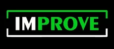
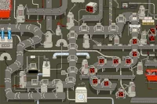

This week, I like to share a project with you that started as a very interesting challenge and developed into an interdisciplinary, productive, and fun experience: A fully automatic multi-display end-to-end customer test prototype. In the end, it was surprising to see what parts of the code the most effort went into.
Initial Situation
The project partner’s business sells laptops with customized operating system support. Before every release, custom operating system images have to be tested against the software and hardware combinations that are certified and shipped with and for the supported laptop models. These tests have so far been executed manually in a dedicated QA department. Manual testing introduces unwanted delays in the product cycles, so the project partner’s challenge was: How to automate the most time-consuming part of it? Concentrating on the manual, most time-consuming, and costly phases of the software release process is strategically the best way to improve the throughput of the organization, as we might already have learned from the three ways in the book “The Phoenix Project”.
After each successful test phase, professionals of the QA department sign the test result documentation personally (autograph signature, not (yet) cryptographic signature). For this reason, automated testing not only had implications for the development department but also legal ones for the QA: We could improve the processes by automating phases that have been performed manually before and then have developers use those earlier and frequently to reduce the number of bugs in release phases in the final test runs. But this had to happen step by step, so the test method had to be designed in a way that the non-programmers, who still have to sign the test results before every release, trust the automated test approach to be equivalent to manual testing in its validation of tested functionality. If we failed this constraint, we would just produce another stage somewhere in the existing processes. It would slowly drift away from what happens in actual pre-release QA over time and all the investment would miss its target.
This constraint made the overall problem much harder. I see this as a side effect of change being more difficult in big corporations compared to smaller startups: You typically face multiple stakeholders with sometimes contradicting incentives, often combined with a big portion of risk avoidance. In such committee-like environments, no one can take full ownership and “just decide” requirements - instead, solutions are discussed until everyone agrees. This often leads to extremely complex solutions with the risk of missing the point.
This part of the story reminded me of the “Remember the Vasa!” paper by Bjarne Stroustrup in the C++ committee. The Wikipedia article about the Vasa story is also worth reading.
Technical Problem Description

The manual process that should be automated, starts with installing a release candidate image on a laptop, then booting into the installed OS. From there, all the basic things like network/internet access, display support, suspend-resume support, video playback performance, etc., etc. had to be tested. The whole test process resembled multiple phases of a typical day in the life of the product:
- The image is installed on the laptop under test (unattended USB installer)
- The laptop gets power cycled and boots into the OS
- LAN and Wi-Fi connectivity are verified
- external screens are plugged, in different variations:
- different order of plugging
- unplugging all screens must result in an automatic system suspend, if and only if the laptop lid is closed
- the system has to properly wake up with/without external screens when the power button is actuated or respectively the laptop lid was opened
- VMs are launched, and their network connectivity verified
- Multiple display resolutions have to be tried and verified that each tested display model shows the right picture (multi-display context: orientation and ordering) with the right resolution
- HD Videos are launched inside/outside VMs and verified for playback with good frame rate
After the iterative process of thinking of and proposing solutions, the following technical requirements for the automatic test process were defined:
- Network access via both cable and Wi-Fi has to be verified
- Plugging in and out displays must happen physically, i.e. the electric cable contact shall be cut instead of doing it in software or switching off the displays
- Similar to the displays, laptop docking and undocking must look from a hardware perspective as if happened physically
- Laptop lid closing and opening must happen physically
- Automated installation of the test image may be performed via network boot
- The product including software and hardware must not differ from the shipped
production version for the test as this would impede the validity of the test
results.
The only exceptions are:
- Remote control of operating system and applications can be done via a specific service (developed and used by the project partner’s development department) that is reachable via serial line
- We can solder an electrical cable to the power buttons of the laptop models to simulate users powering the device on/off and suspending to RAM, as Intel AMT was disabled for security reasons
- The real physical display output has to be captured for different display
models
- For this reason, video capture devices as HDMI/DP grabbers were ruled out by the project partner
The result must provide the users (Developer, QA specialist) a REST interface to upload an installer image and trigger a full test run. After the test has finished, the test results must be available for download. In the beginning, the result document must be human-readable, printable HTML (and in that sense, signable). All screenshots and videos must be attached to it as proof. In the future, this would happen without human interaction, and instead being triggered by CI pipelines as part of a quality gate that each product change must go through.
Solution
The prototype design we came up with, roughly followed this schema:
The Test Controller was a normal Linux computer with enough USB plugs and bandwidth to withstand multiple USB webcam HD streams and a serial cable adapter. It also had to have two LAN connections: One to the system under test for DHCP, PXE boot, and general network gateway, as well as one to the outside that provides the REST interface. Also, it had to provide Wi-Fi to be configured as an access point.
The I/O Control module was a Raspberry Pi due to its easily programmable general-purpose I/O ports and USB OTG functionality. The USB OTG functionality was not yet used in the prototype. In later versions, it should be used for booting official installer images via USB.
The first physical setup was just enough to verify the feasibility of the whole project as quickly as possible:
The most important hardware setup details are:
- The display port switch was a hardware Y-switch with a button that was connected to the Raspi’s GPIO ports
- For HDMI, which was more complicated because HDMI is encrypted, we did not find such devices, so we used a remote-controllable HDMI switch. It turned out that this device was not matching the requirements. The project partner accepted that we design a new board that fits the requirements as a follow-up after this prototype.
- The docking station’s power plug state was controlled via a remote-controllable power socket
- The webcams were simply mounted on quick-to-build aluminum frames. These were the most unusual part of the whole setup and regularly drew intrigued looks. The bigger the screen, the bigger the minimal distance of the webcam to the screen had to be to fully capture the full display. Being made of aluminum and very light wood, the displays would not tilt under the webcam’s weight.
The last detail is how we automated the laptop lid opening and closing. Most laptops have a hall sensor, so we installed an electromagnet that could be triggered by another one of the raspi’s GPIO pins:
After all physical setup and connections were put in place, the remaining work was “only” software. Setting up the raspberry so that it would accept I/O commands over network, and the test controller so that it would be a DHCP and PXE boot server, control all the webcams, the Raspberry Pi, the remote power socket, etc. was a lot of system configuration. Using NixOS, the configuration of both systems was simple and could be performed in a short time with only a few hundred lines of NixOS configuration modules. The best thing about this approach was that we could commit the configuration with the code, and it was trivially reproducible on other machines.
The bulk of the work was now in the software development of a service that runs a REST interface to accept uploads of new installer images, creates and schedules test runs from those, and then executes them. The professionals in the project partner’s department who would later work with this were already familiar with the Python language and ecosystem. This made Python a natural choice.
Display Resolution Verification
How to determine if a screen shows the right display solution? Typically, one would query the X/Wayland server or video driver for this information. Previously, it was common to check this manually during the manual test phase: If the resolution was wrong, the experienced human tester would be able to recognize this at the first glance. In the end, the prototype had to verify that with the selected display model, the resolution that is visible to the end user is really the one that the driver claims.
To accomplish this task, the following problems had to be solved in that order:
- Take a photo of the physical display using the mounted webcam
- Identify the display’s corners and normalize the photo, so it contains only the display’s “screenshot” portion
- Evaluate the screenshot’s content: Is it the right picture and resolution?
Steps 1 and 2 were straightforward as the test controller could dictate what the laptop under test should display on which screen. This way the test script would ask the OS under test to set up the screen(s) with specific ordering and resolutions and then display some test images for further verification.
We chose to use the Python version of the OpenCV library, which provides ArUco codes and image recognition functions to detect them:
Different information can be extracted from detected ArUco codes on photos:
- The code’s ID
-
This can be freely chosen depending on the number of “blocks” the code consists of. To choose the number of blocks, library users would select so-called ArUco dictionaries. Dictionaries with bigger blocks are easier to detect even on bad photos or from a far distance but transport smaller ranges of ID numbers.
- The pixel position of all the corners of each code
-
The size or distance can be calculated from those
- The code’s geometric orientation as a euclidean XYZ-vector
-
In our case, this was useful for normalizing slightly crooked photos, as the mounted webcam is never perfectly aligned
So, to quickly evaluate how well OpenCV would work for us, I printed an ArUco code and glued it onto my vacuum bot at home. Then, I wrote an OpenCV script that “normalizes” the image in a way that the ArUco code gets translated to the middle of the output image:
The vacuum bot proof-of-concept was more a fun project for me than a serious demonstrator for display-corner detection. To present the project partner with how solid this approach would be, I created the next demo, which was more relevant for actual screen recording. The script turned out to be robust in such extreme examples. Our use case would be “boring” in contrast.
So that was steps 1 and 2. How to verify the display resolution? We did this:
We decomposed the image resolution to transport it encoded in the IDs of multiple ArUco codes, which then could easily be composed back from the webcam photos.
At this point, this information was redundant because the test system already knew at any point in time which display resolution it is testing. However, adding some redundancy allowed us to greatly decompose the system’s parts into more independent and reusable modules.
From knowing the nominal display resolution, we can calculate how many percent of the picture the black ArUco code square size may occupy. This is even possible without knowing the display’s physical size. Fortunately, algorithms like this are trivially unit-testable with synthesized and real-life input samples.
Another remaining problem was that the webcams tried to automatically refocus and readjust contrast whenever the display content changed (especially from dark to bright or the other way around), and often would not find the focus for a long time. Even on really bad photos, the ArUco codes with big blocks were easy to identify, so it was technically very easy to distinguish if the display is already displaying the right content, but the webcam has still not finished re-focusing. The firmware does officially allow disabling autofocus via the V4L interface, but it did not work for us - it was unclear to us if this was due to the camera model, a firmware bug, or whatever. In the limited project time, we made it work with robust error handling and wait phases. These could simply be dropped in future efforts of fixing the autofocus.
Automatic Frame Drop Detection
To check if video playback is fluid, we had to select an approach where the video itself can be chosen by the project partner’s customers: If end-users experience some video to be stuttering, the partner desired to be able to embed it in their testing to give developers a way to verify their fix.
We wrote code that takes the provided video and slightly adapts it by adding multiple ArUco codes. By defining how fast (i.e. how many pixels per frame) the ArUco codes move, we were able to determine if and how many frames were dropped during playback.
As the display’s and the webcam’s image buildup are not synchronized, there’s some probability for one or the other frame to contain a distorted ArUco code. So we added four codes of which the majority stays undistorted, which made the frame drop detection very solid on every frame.
During manual testing, testers were able to say if a video stutters or not, and maybe quantify it by “stutters a lot” or “only a bit”. The output of the algorithm allowed us to count the frequency of frame drops as well as the quantity of dropped frames. Objective quality metrics using histograms could be considered from this point, which enhances the whole QA phase through rich automatic quantitative analysis. We did not go too crazy on the analysis here because it was yet unclear which exact metrics developers would later ask for (if at all) when analyzing low frame rates.
Learnings
The whole project took roughly three months. The parts that were initially thought to be the most complex - the image & video processing - were done in a few weeks, including all trial & error.
There was no specific part that contributed the most complexity - it was the mix of all disciplines: System setup, network (LAN and Wi-Fi) configuration, dynamic network boot, control of primitive I/O, photo and video stream capture, remote control, VM configuration, etc., etc. Setting up a system with so many moving parts is simply complex.
Maybe the most important consideration that went into all spots of all library code that was written for this project, was error handling. In this project, errors could come from everywhere: Some cable might get loose, some network connection might not work, some webcam might need extraordinarily long to focus, some VM might start up with abnormal delay, the Wi-Fi connection takes longer than normal despite lab conditions, etc. - all the cases needed to be handled with care.
We rigorously worked on the clean discrimination between two general kinds of errors:
- Infrastructure failures: The test setup failed, not the product under test.
- Test failures: The product under test behaves incorrectly, hence a bug is discovered.

The whole prototype had to be rock solid in all cases every single time. Flaky test infrastructure eventually results in more cost than value. The project was part of an effort to optimize the overall throughput of the development and QA departments. Running such an automatism for years and gaining experience with it would expose further optimization potential. To facilitate that this proof-of-concept is just the start of an ongoing journey to faster and more reliable testing, it had to be designed in a way that it is obvious at all times where things fall apart, and how often. With this information, the operators of such automatic infrastructure would be able to fix outages as fast as possible, and also improve its mechanisms to continuously reduce failure potential.
Every line of code that makes the product more testable saves you hundreds and thousands of lines of testing code. So far, testability was mostly considered on the level of unit tests, but looking at higher levels of the integration chain, testability as a concept vanished more and more. This is understandable, considering that programmers have less and less influence the farther away the integration of their components is away from them - but in the end, it’s only the programmers who can make a software product testable as this has to happen at the beginning, in the code. If not only builds and unit tests but the integration of components is within reach for software developers, it starts to make sense to put the design of higher-level integration tests into their definition of done. This is, of course, the idea of putting Dev and Ops together to DevOps. In many companies, this is more said than done, because management is not made aware or does not understand the commitment and restructuring of departments that this requires. Restructuring as a word is also mostly frowned upon by all participating parties.
Talking about integration and ops of products: This new test automatism was in some sense a little product itself that needs continuous improvement, integration, and deployment, too. A big stack of Python code (we also reused some existing C++ and Haskell code) is not yet a running deployment. But this turned out to be rather simple due to our technology choice: Interestingly, using NixOS helped us a lot in defining what the running configuration looks like. Finishing this product in this time frame with something else than the dependency and package management of nix, as well as the compositional way to define system configurations of NixOS, is hardly imaginable. While developing complex scripts that operate on many different technical domains, nix also helped us with its huge and up-to-date package collection. Duplicating the lab setup with slightly different hardware in the project partner’s lab was a smooth process due to the nature of NixOS configurations.
Summary
The project acceptance meeting and its big demo were delightful and fun for both sides. The project partner was happy that it all worked out as planned and accepted the follow-ups that resulted from building the prototype. We were happy with how well it went and the amount of complexity we got under control with a relatively slick system design.

Apart from the follow-ups, it is now in their hands to run and integrate this automated test infrastructure deeper into their processes, and scale it up over time in the ongoing quest to increase the overall throughput of their software pipeline. Whenever the next improvement or reorganization comes along, we stand by as a helping partner.
I think it is very important to understand that shift-left testing, SCRUM, Extreme Programming, Agile and Lean software development, etc. are not approaches that work well with short-term actionism. If you encounter problematic releases, quality problems, or eternal lead times for new features and bug fixes in your company, then this is most certainly not solvable with short projects that are thrown on the problem. The solution always lies in the change of existing structures: Such problems are often just a symptom of the fact that the existing structures no longer scale on the current level. Changing structures is very problematic, especially in big companies, and can not result in perfection after the first step. External helpers with new perspectives can help with the question of what scalable structures for your situation look like and how to get there step by step.